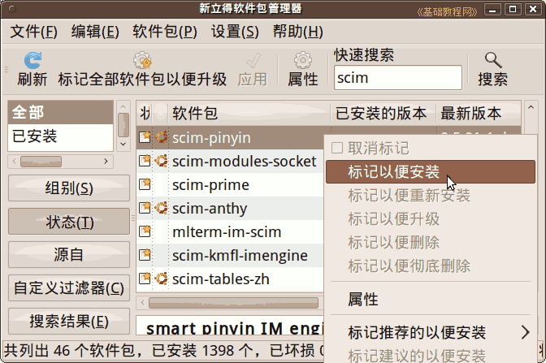
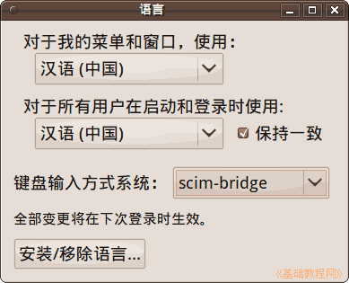
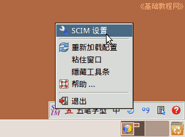
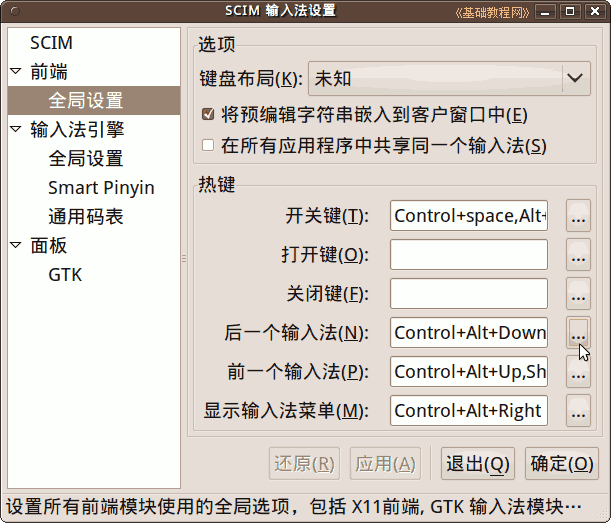
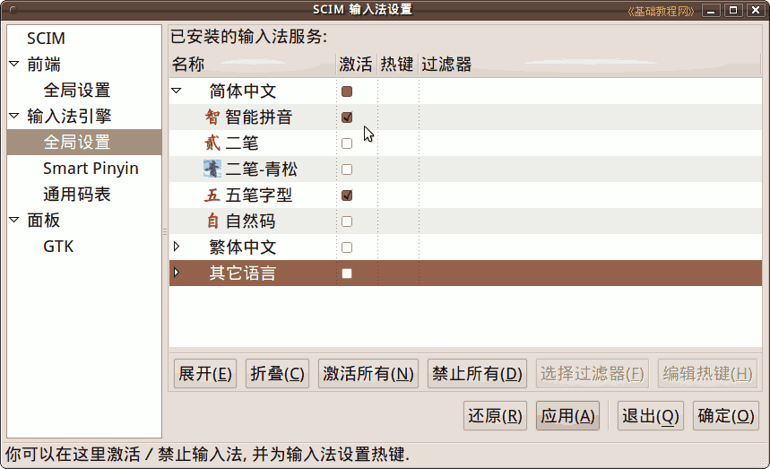
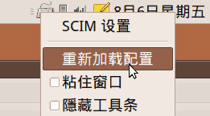

Ubuntu/GNOME 桌面程序指南
作者：TeliuTe 来源：基础教程网
九、SCIM 输入法 返回目录 下一课SCIM 输入法也是常用的输入法平台之一；
1、安装
1）可以在新立得中“搜索 - 标记 - 应用”scim-pinyin ，要用五笔再搜索 scim-table ；

2）安装好以后，在“系统 - 系统管理 - 语言支持”里检查输入法是 scim，注销一下再登录就可以用了；

3）打开一个文本窗口，按 Ctrl＋空格键 就可以输入中文，在输入法图标或输入条上点右键，进入 SCIM 设置；

4）在 “前端 －全局设置” 里可以设置切换输入法的快捷键，点右边的三个小点按钮；

5）在 “输入法引擎－全局设置” 中，可以去掉不用的输入法；

6）其他设置自己可以看一看，按照自己的习惯来设置，设置完了点右键，选“重新加载配置”；

本节学习了SCIM 输入法的基础知识，如果你成功地完成了练习，请继续学习下一课内容；
本教程由86团学校TeliuTe制作|著作权所有
基础教程网：http://teliute.org/
美丽的校园……
转载和引用本站内容，请保留版权信息和本站链接。